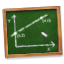

Graph - Coordinate Grid
Each graph has a coordinate grid that can be customized according to your needs.
Graph Properties
Graph Properties shown in Property Panel
-
Graph AxisGraph with axesIn order to add or remove graph axes, toggle the checkbox titled Coordinate Axes.
-
Graph Tick Marks
 Graph with tick marks and axesIn order to add or remove graph tick marks, toggle the checkbox titled Tick Marks located under the Coordinate Axes checkbox.
Graph with tick marks and axesIn order to add or remove graph tick marks, toggle the checkbox titled Tick Marks located under the Coordinate Axes checkbox. -
Graph LabelsGraph with labelsIn order to add or remove labels along graph axes, toggle the checkbox titled Labels located under the Coordinate Axes checkbox.
-
Graph GridGraph with grid without coordinate axesIn order to add or remove the graph grid, toggle the checkbox titled Grid.
-
Graph Axes PropertiesAxes PropertiesTo alter the axes properties modify the the x/y axes settings locating in the Properties Panel (shown in image above). The following axis configurations can be modified:
- Minimum axis value
- Maximum axis value
- Axis Scale Value
- Axis Interval Label Value